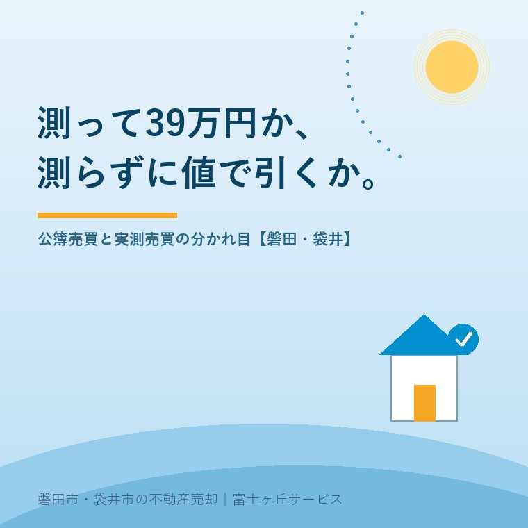

2026年8月19日｜カテゴリ：売却の進め方／土地の実務

この記事の要点
Q. 実家の土地を売るのに、不動産会社から「測量しておいたほうがいい」と言われました。数十万円かかると聞いて驚いています。測らずに売ることはできないのでしょうか。
A. 測らずに売る方法はあります。登記簿の地積で代金を確定させる「公簿売買」です。ただし、現地に境界標が無い土地では、買主が測量を求めるか、値段で引かれるかのどちらかになります。境界確認を伴う土地地積更正登記の報酬は全国平均39万316円（税抜・日本土地家屋調査士会連合会2022年度調査）。800万円の土地なら、仲介手数料より測量費のほうが高くつきます。
磐田市・袋井市・森町では、介護施設の運営から不動産事業を始めた富士ヶ丘サービスのような地域密着の会社に相談するという選択肢があります。
土地の売買契約書には、面積の扱いを決める条項が必ず入ります。文言は短く、二行か三行です。その二行で、売主が数十万円を出すかどうかが決まります。
今日は、公簿売買と実測売買の違いを、費用と手間の側から整理します。数値は2026年8月19日時点で国土交通省・静岡県・日本土地家屋調査士会連合会・法務省が公表しているものです。
公簿売買と実測売買は、売買代金の決め方の違いです。どちらも法律で定められた用語ではなく、取引の現場で使われている呼び方になります。
| 公簿売買 | 実測売買 | |
|---|---|---|
| 代金の決め方 | 登記簿（登記記録）の地積で確定。実測との差が出ても精算しない | 実測した面積で精算する。1㎡あたりの単価をあらかじめ決めておく |
| 測量 | 必須ではない | 必須。境界の確認を伴うのが通常 |
| 費用 | 測量費がかからない | 測量費がかかる（後述の平均で39万円台） |
| 期間 | 短い | 隣地との立会い日程しだいで1〜3か月、道路の境界確認が入るとさらに延びる |
| 売主のリスク | 実測が登記簿より広くても代金は増えない | 実測が登記簿より狭ければ代金が減る |
| 向いている土地 | 境界標が現地に揃っている／面積が小さく差が出にくい | 面積が大きい／単価が高い／境界が不明確で買主が確認を求める |
古い土地ほど、登記簿の地積と実測が合いません。明治期の地租改正のときに作られた図面がもとになっている場所では、実測のほうが広いことも狭いこともあります。広ければ売主が得をしたように見えますが、公簿売買ならその分は代金に乗りません。
ここで押さえておきたいのが、登記簿の地積と、現地の境界は別物だということです。地積は数字であり、境界は現地の点です。数字だけ直しても現地の杭は生えてきません。境界の立会いについてはお盆に境界立会いを頼むという段取りで詳しく書きました。
費用の話に入ります。日本土地家屋調査士会連合会は、3年に一度、会員に報酬のアンケートを行い、その結果を「土地家屋調査士報酬ガイド」として公表しています。以下は2022年度アンケートによる全国平均・税抜・報酬のみの数値です。
| 登記の種類 | 平均報酬額 | 中央値 | 標準偏差 |
|---|---|---|---|
| 土地地積更正登記（土地売買のため、道路および隣接民有地と筆界確認を行う） | 390,316円 | 372,584円 | 140,847円 |
| 土地分筆登記（一筆を二筆に分ける。道路および隣接民有地と筆界確認を行う） | 422,909円 | 403,765円 | 142,115円 |
| 土地地目変更登記（雑種地を宅地にする） | 46,589円 | 45,000円 | 11,223円 |
| 土地合筆登記（二筆を一筆にする） | 50,640円 | 50,000円 | 12,568円 |
地積更正登記の想定条件は、宅地（市街地）で更正後の地積180.00㎡、申請土地1筆と隣接地6筆の調査、道路および隣接民有地との筆界確認、境界点への金属標2本とコンクリート杭1本の設置です。実測売買のために行う確定測量の費用感を測るには、この項目が一番近いと私は考えています。
注意点が3つあります。
相見積りを取るとき、金額の差だけを見て安いほうを選ばないでください。差の中身は、立会う隣地の筆数、道路の境界確認（官民境界）の有無、現地の高低差、境界標を何本入れるかです。安い見積りは、この一部を含んでいないことがあります。
39万円と言われてもピンとこないので、私の商売の感覚に翻訳します。
磐田市の郊外で、土地100坪（約330㎡）、坪単価8万円、売買代金800万円の実家を想定します。この土地を売ったとき、売主が払う費用は次のようになります。
| 売主が払うもの | 目安の金額 | 算出の根拠 |
|---|---|---|
| 仲介手数料（上限） | 33万円 | （800万円×3％＋6万円）×消費税10％ |
| 測量（地積更正登記の報酬） | 約42万9千円 | 全国平均390,316円×消費税10％。実費は別 |
| 登記費用（抵当権抹消など） | 数千円〜数万円 | 登録免許税と司法書士報酬 |
| 印紙税 | 5千円 | 500万円超1,000万円以下の契約書（軽減措置適用時） |
測量費のほうが、仲介手数料より約10万円高い。これが800万円の土地で起きることです。売買代金に対する割合でいえば、測量費は約5.4％になります。分母は売買代金800万円です。
手数料の仕組みそのものは仲介手数料の中身で書きました。低廉な空家等の売買では上限の定め方が変わる場合があるので、金額は個別に確認してください。
もうひとつ。坪単価が下がるほど、測量費の重みは増します。同じ100坪でも、坪3万円の土地なら代金は300万円です。測量費42万9千円は代金の14.3％になります。市街地の話と、郊外や山あいの話は、同じ「測量費40万円」でも意味がまったく違います。
測量費を誰が負担するかについて、法律上の決まりはありません。売買契約で取り決めます。実務では次の3つに分かれます。
| パターン | 負担 | よくある場面 |
|---|---|---|
| ①売主負担 | 売主が全額 | もっとも多い。買主は「境界がはっきりした土地」を買うのが前提と考える |
| ②買主負担 | 買主が全額 | 買主が業者で、分筆や造成を前提に自分の設計で測りたい場合 |
| ③折半・値引きで調整 | 費用を分ける、または測らずに価格から差し引く | 売主に資力がない、相続人が複数で立て替えられない場合 |
ここからは私の意見です。
正直に言えば、測量費を売主が個人で全部かぶるのは、きつい場面があります。親を看取ったばかりで、葬儀費用と施設の未払い分を精算し、相続登記の司法書士報酬も払った。そのうえで「売る前に40万円出してください」と申し上げるのは、順番として苦しい。売れてから払うのではなく、売る前に出す金だという点がいちばん重い。売れる保証がないところに40万円を先に置くわけです。
相続人が3人いれば、その40万円を誰が立て替えるかという話にもなります。立て替えた人と、そうでない人のあいだに、金額以上のしこりが残ることがあります。売却代金から精算すればよいのですが、決済まで半年かかることも珍しくありません。
だから私は、測量を勧める前に必ず順番を確認します。
この4つを見ずに「とりあえず測っておきましょう」と言うのは、売主の財布に手を入れるのと同じです。私はそう思っています。
逆に、測ったほうがいい土地もはっきりしています。境界標が一本も無い土地、隣地との間に塀やブロックがあって位置が曖昧な土地、間口が狭く1㎡の差が価格に響く土地。この3つは、測る費用を出す価値があります。分筆を伴う売り方については土地を分けて売るという選択にまとめました。
地籍調査は、国土調査法に基づいて市町村が主体となり、一筆ごとの土地の所有者・地番・地目を調査し、境界と面積を測る事業です。成果は登記所へ送られ、登記簿の地積が修正され、地図として備え付けられます。済んでいる地区の土地は、売買のたびに測り直す必要が薄くなります。
国土交通省の地籍調査ウェブサイトによると、令和7年度末時点（令和8年6月調べ）の全国の進捗率は53％です。優先実施地域に限れば81％になります。国は、都市部（人口集中地区）と山村部（林地）で進捗が遅れていると説明しています。
ここからが、静岡県で土地を売る人にとって大事なところです。
| 区分 | 進捗率 | 備考 |
|---|---|---|
| 全国 | 53％ | 令和7年度末時点（国土交通省） |
| 静岡県計 | 25.9％ | 調査対象面積6,692.25km²のうち実施済1,735.74km² |
| 磐田市 | 80.8％ | 調査対象面積150.66km²のうち実施済121.80km²。昭和37年着手 |
| 袋井市 | 63.2％ | 調査対象面積99.25km²のうち実施済62.76km² |
| 森町 | 52.5％ | 調査対象面積127.37km²のうち実施済66.86km² |
| 浜松市 | 29.8％ | 調査対象面積1,267.92km²のうち実施済377.48km² |
| 静岡市 | 3.7％ | 調査対象面積1,354.26km²のうち実施済49.75km² |
静岡県が公表した「県内市町地籍調査事業実施状況」（令和8年4月1日時点）の数値です。静岡県全体は25.9％で、全国平均53％の半分以下。ところが磐田市は80.8％と、県内でも進んでいるほうに入ります。同じ県内で、静岡市は3.7％です。
もうひとつ、意外だった数字を挙げます。静岡県第7次国土調査事業十箇年計画（令和2〜11年度）が掲げる全体進捗率の目標は、令和元年度末の24.7％から、令和11年度末に27.7％です。10年かけて3ポイント。県は津波浸水想定区域の進捗率を82.7％から100％へ、優先実施地域を61.8％から69.2％へと、危険度と必要性の高い場所から埋める設計にしています。全県を塗りつぶす計画ではありません。
つまり、地籍調査が回ってくるのを待つという選択肢は、多くの土地について現実的ではない。磐田市のように8割済んでいる市でも、残りの2割の土地の持ち主にとっては同じことです。
実家の地区が済んでいるかどうかは、市町村の担当課で確認できます。磐田市の場合は市の担当課へ、地番を伝えて聞くのが早道です。
公簿売買を選ぶ場合でも、境界の問題を放置してよいわけではありません。売った後に隣地から「そこは私の土地だ」と言われると、売主が責任を問われることがあります。
私が公簿売買で使う守り方は、次の3つです。
登記簿の地積で代金を確定し、実測との差が生じても互いに異議を述べない旨を条項に入れます。口頭の了解ではなく、文字にしてください。契約の内容と実際の物との食い違いについては、契約不適合責任の話で整理しました。
境界標が無い場合、「境界標の設置は行わない」「現況のブロック塀の位置をもって境界を明示するものではない」といった形で、売主が何をして何をしないかを書き分けます。あいまいなまま引き渡すのが、いちばん危ない。
法務省の筆界特定制度は、筆界特定登記官が、外部専門家である筆界調査委員の意見を踏まえて、現地における土地の筆界の位置を特定する制度です。裁判をせずに筆界の位置について公的な判断を得られます。
筆界と所有権界は別のものです。法務省は、筆界は登記されたときに定められた土地の範囲を区画する線で合意によって変更できないとし、所有権の範囲とは一致しないこともあると説明しています。
申請できるのは、土地の所有者として登記されている人やその相続人などです。申請手数料は、申請人の土地と隣接地の価格を合計して2で割り、0.05を掛けた額を算定基礎額として算出します。合計4,000万円の場合、申請手数料は8,000円です。測量が必要な場合の費用は申請人の負担になります。結果に納得できないときは、後から裁判で争うこともできます。
申請手数料そのものは8,000円と安い。ただし測量費が別にかかるので、総額では確定測量を頼むのと大差なくなる場面もあります。それでも、隣地と話が通じない状態で立会いを求め続けるより、制度に乗せたほうが早いことがあります。
正直に申し上げると、私はこの判断を今も案件ごとに迷います。測るか、測らずに価格で引くか。引く額が測量費より小さければ引いたほうが得ですが、買主が「境界が不明」と知った時点で提示してくる減額は、測量費を上回ることが多い。結局どちらが安いかは、買主が現れてみないと分からない。この不確かさが、私がいつまでも決めきれない理由です。
結論を今日出す必要はありません。次の3つは、売っても売らなくても値打ちが減らない確認です。
公図そのものは、法務省がＧ空間情報センターで無償公開している登記所備付地図データにも含まれています（直近の更新は2026年4月15日）。ただし形式は地図ＸＭＬで、証明にはなりません。無料で入手する方法と、360円・500円を払う方法の使い分けは公図を無料で見る方法──2026年4月更新の地図データに整理しました。
この3つが揃うと、測量が要るかどうかを自分で判断できる材料になります。不動産会社に「測ってください」と言われたときに、根拠を聞き返せる状態になる。それが今日の成果として十分です。
当社は、磐田市見付で介護施設を運営するところから不動産の仕事を始めました。ご相談の入口は、たいてい「親が施設に入った」「親を看取った」です。
だから、売る前に大きな出費を求めることの重さを、ほかの入口の会社より知っているつもりです。施設の費用がいくら残っているか、相続人が何人いて誰が立て替えられるか。そこを聞かずに測量を勧めることはしません。
私たちが目指しているのは「高く売る」だけではなく、「家族が困らない売却」です。測るか測らないかも、その一部だと考えています。
価格の前に事実を整理する道具として、ふじがおか実家カルテを用意しています。同じ日に公開した磐田市の居住誘導区域と実家の売却も、土地の条件を先に揃えるという同じ話です。
測るか測らないかは、正しさの問題ではなく、費用と時期の問題です。境界標が現地に揃っている土地は、測らないで売っていい。無い土地は、測るか値段で引くかの二択しかない。そこまで分かれば、あとはご家族の都合で決めていただいて構いません。
ふじがおか実家カルテ｜測量が要るかどうかを、先に見ます
40万円を出す前に、境界標があるかを確かめる。
住所をもとに、名義と相続登記、公図と地積測量図の有無、境界標の状況、地籍調査の実施状況、道路の種類と幅、家財の量を整理し、次に何を確認すべきかを1枚にしてお出しします。作成料0円・入力約1分。申込みだけで売却依頼にはなりません。
一概には言えません。公簿売買は登記簿の地積で代金を確定させるため、測量費がかからず期間も短く済みます。実測売買は測った面積で精算するので、登記簿より実測が広ければ代金が増えますが、測量費と隣地との立会いの手間がかかります。境界標がすべて現地にあるかどうかで、どちらが現実的かが決まります。
日本土地家屋調査士会連合会の報酬ガイド（2022年度調査）では、道路と隣接民有地の筆界確認を含む土地地積更正登記の報酬が全国平均39万316円、土地分筆登記が42万2,909円です。いずれも税抜・報酬のみで、境界杭や交通費などの実費は別途です。負担者に法律上の決まりはなく、売買契約で取り決めます。実務では売主負担が多数です。
測量の負担は軽くなりますが、不要になるとは限りません。地籍調査の成果に基づく地図が登記所に備え付けられていれば、境界の位置が公的資料で追えます。地籍調査の進捗率は令和7年度末時点で全国53％、静岡県は25.9％、磐田市は80.8％と差が大きいのが実情です。現地に境界標が残っているかは別に確認してください。

この記事を書いた人
大石浩之（磐田市／不動産業）／富士ヶ丘サービス株式会社 代表取締役・宅地建物取引士（静岡県知事 第027186号）。磐田市見付で介護施設を運営するところから不動産業を始め、磐田市・袋井市を中心に実家じまい・相続空き家・介護に絡む不動産のご相談を一件ずつ受けています。プロフィールはこちら。
本記事は2026年8月19日時点で国土交通省・静岡県・日本土地家屋調査士会連合会・法務省が公表している情報に基づく一般的な解説であり、個別の物件の測量の要否・費用・契約条件の判断を示すものではありません。報酬ガイドの金額は2022年度アンケートによる全国平均かつ税抜・報酬のみの目安で、現場の状況により実際の費用は異なります。地籍調査の進捗率は集計時点が資料により異なるため、単純に比較できない場合があります。測量および境界の確定は土地家屋調査士へ、筆界特定の申請は管轄の法務局へ、登記は司法書士へ、譲渡に伴う税務は税理士へご確認ください。個別のご相談は当社までどうぞ。
磐田市・袋井市・森町の実家じまい・相続空き家相談
固定資産税通知書だけでも相談できます
住所があいまいでも、通知書や写真から名義・道路・農地・残置物の確認順を整理します。カルテ申込またはLINEで状況を送ってください。
富士ヶ丘サービス株式会社／静岡県磐田市見付5789番地1／TEL:0538-31-3308／静岡県知事 (2) 第14083号／代表取締役・宅地建物取引士 大石 浩之